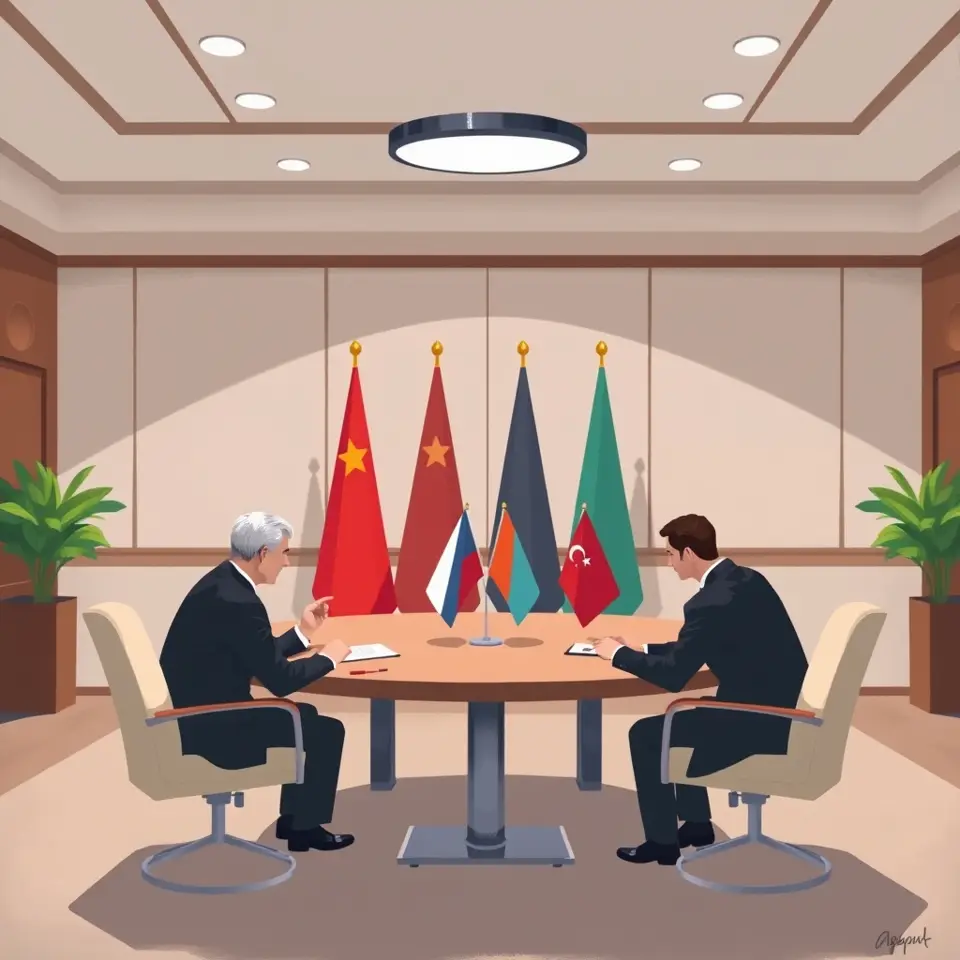
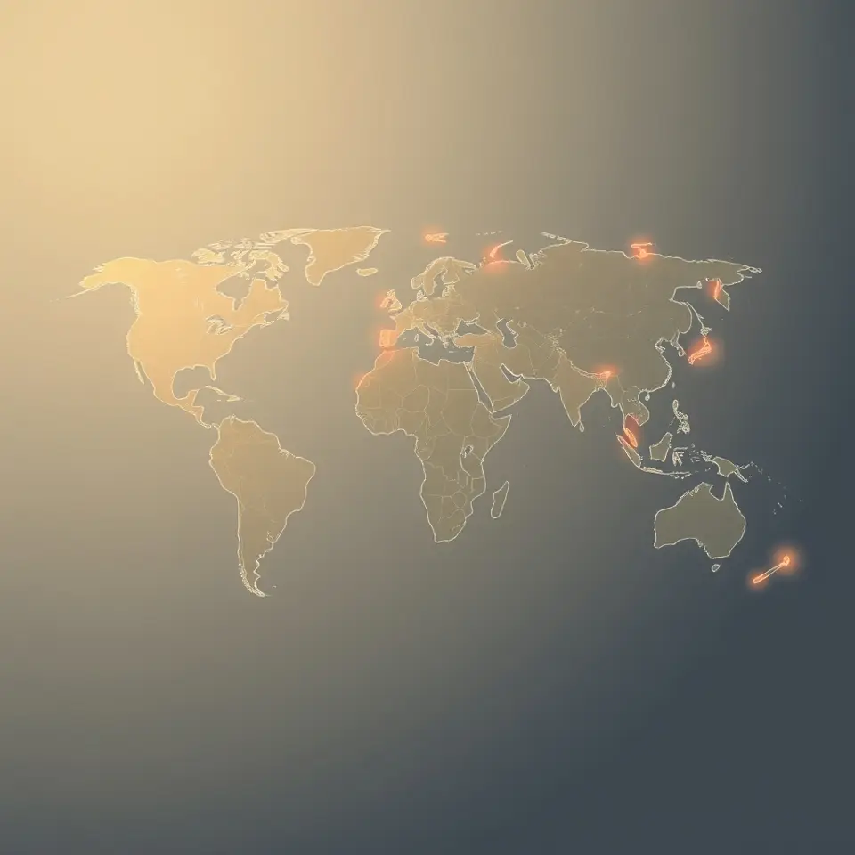
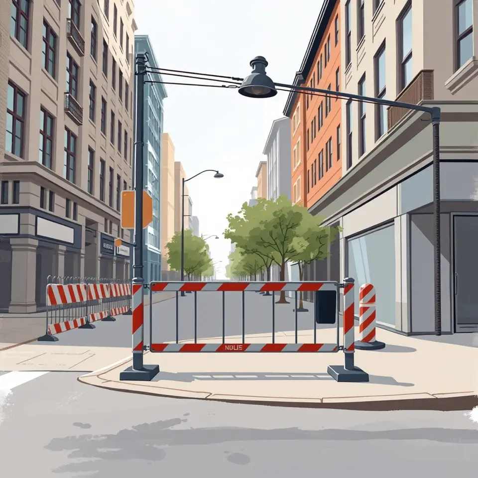
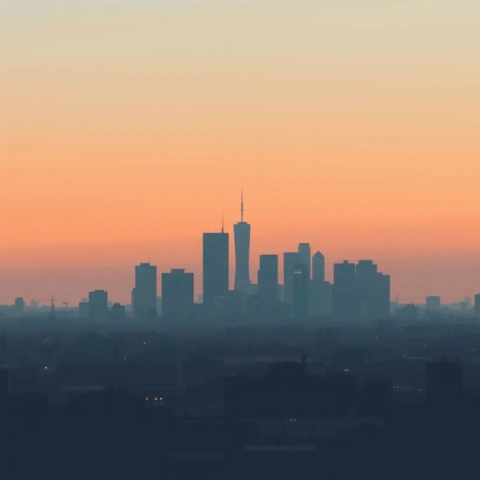
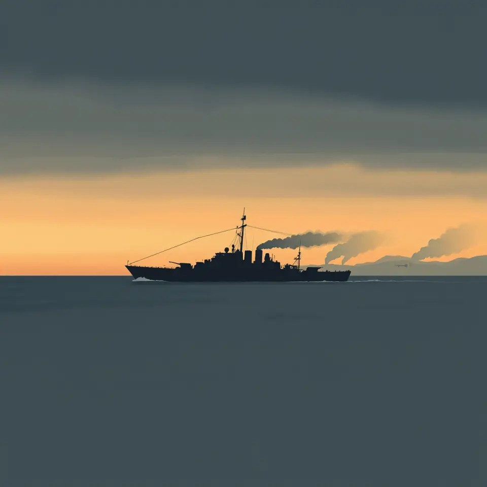
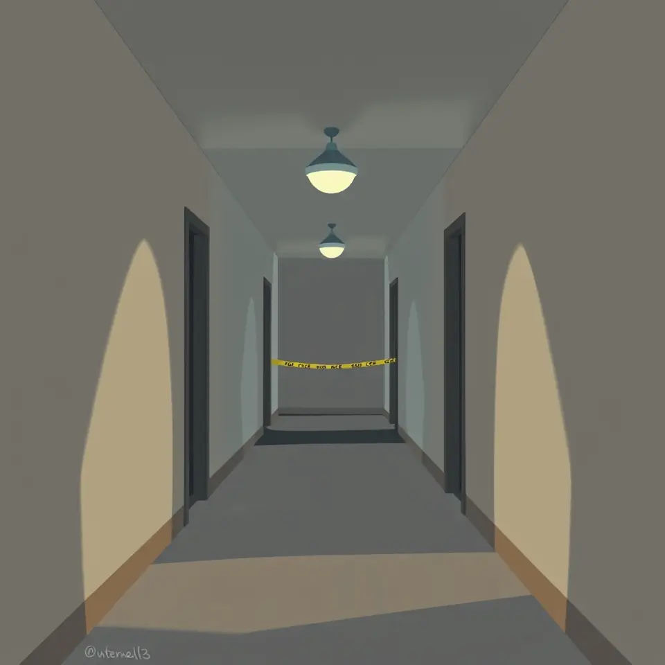
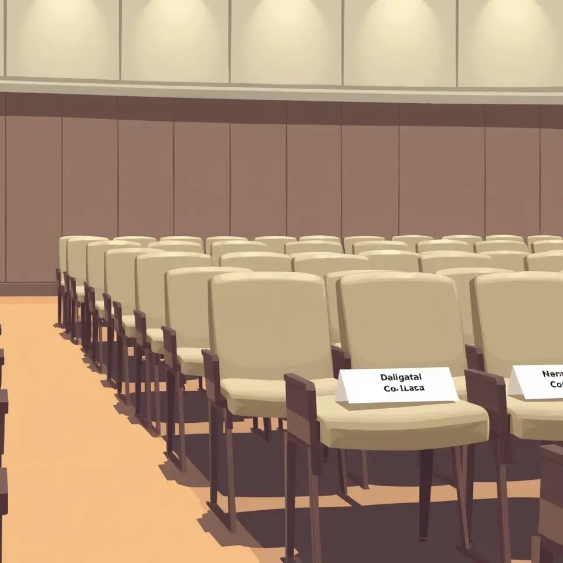

국제

미국, 19일 미중러 정상회담 발표…트럼프-김정은 회담 예정 없어
미국이 19일 미중러 정상회담 개최를 발표했으며 트럼프-김정은 회담은 예정되지 않았다고 밝혔다.

미국 전역 항공기 운항 중단, 수천 편 지연과 결항
통신 장애로 미국 전역의 항공편이 대거 지연·결항되며 수백만 명이 불편을 겪었다.

EU, 우크라이나 종전협상에 유럽 대표로 참여
EU가 독일 등 5개국과 함께 우크라이나 종전 협상에 유럽 대표로 참여한다.

후티 반군, 사우디 아람코 송유관 시설 추가 공격 주장
예멘의 후티 반군이 사우디아라비아 아람코의 송유관 시설을 추가로 공격했다고 주장했다.
 AI 이미지
AI 이미지우크라이나, 드론으로 발트해 러시아 군함 공격…확전 우려
우크라이나가 드론으로 발트해의 러시아 군함을 공격했다는 보도가 나왔다.

이란 혁명수비대, 자체 개발 드론 전시회 열어
이란 혁명수비대가 자체 개발한 드론을 공개하며 군사력을 과시했다.
트럼프·밴스 이란 대응 놓고 입장 차 부각
트럼프 대통령이 이란과 합의가 필요 없다고 밝히며 밴스 주도의 협상론에서 선회했다는 보도가 나왔다.

이란, 바레인 미군 레이더 타격 주장…미군은 부인
이란은 바레인 내 미군 조기경보 레이더를 타격했다고 주장했고, 미 중부사령부는 이를 부인했다.

진보파 밴 홀런, 민주당 원내대표 도전
진보 성향 밴 홀런 의원이 미 상원 민주당 원내대표 경쟁에 나서 중도파 슈머와 맞붙게 됐다.

헤그세스 국방장관, 자신 지적한 병사에 훈장 수여
헤그세스 미 국방장관이 자신을 제지한 병사에게 훈장을 수여하는 장면이 알려지며 화제가 됐다.
이란 “바레인 미 조기경보 레이더 타격”…미군 “이란 드론 요격”
이란이 바레인의 미국 조기경보 레이더를 공격했다고 주장했고, 미군은 이란 드론을 요격했다고 밝혔다.
조현 “한반도 평화는 한중 공동 이익”…왕이 “관계 정상궤도”
한중 외교장관이 회담에서 한반도 평화와 양국 관계 개선에 뜻을 모았다.

조현 “한반도 평화는 한중 공동이익”…왕이 “관계 개선 정상궤도”
조현 외교장관과 왕이 중국 외교부장이 베이징에서 회담해 한중 관계 개선과 한반도 문제를 논의했다.

AI 이미지한중 외교장관, APEC 앞두고 한반도 정세 논의
조현 외교장관과 왕이 중국 외교부장이 회담해 한반도 정세와 한중관계를 논의했다.

위트코프 "푸틴, 다음 평화협상에 유럽 참여 허용"
위트코프 특사는 푸틴 대통령이 다음 우크라이나 평화협상에 유럽의 참여를 허용하기로 했다고 밝혔다.
러시아 우크라이나전 사망자 최소 45만 명 추산
러시아 통계청 자료 해킹으로 우크라이나전 러시아 사망자가 최소 45만 명이라는 수치가 드러났다.
헤그세스 “잘했다, 상병”…자신 꾸짖은 병사에 훈장
미국 국방장관이 국립묘지에서 자신을 제지한 병사에게 훈장을 수여하는 행사를 가졌다.

미국·이란 종전 협상 교착, 밴스 협상 배제
트럼프 대통령이 이란과 합의가 필요 없다고 밝히며 밴스 부통령의 협상 역할이 배제됐다.
이란 혁명수비대 "호르무즈서 가스운반선 기뢰 충돌" 주장
이란 혁명수비대가 호르무즈 해협에서 가스운반선이 기뢰와 충돌해 대형 폭발이 일어났다고 주장했다.
호르무즈 해협 가스운반선 기뢰 충돌 주장 제기
이란 혁명수비대가 호르무즈 해협에서 가스운반선이 기뢰와 충돌해 대형 폭발이 일어났다고 주장했다.

AI 이미지이란 연계 해킹 공격, 냉장설비로 확산 우려
유럽에서 산업용 냉각 시스템 해킹이 잇따르며 이란 연계 여부를 둘러싼 논란이 커지고 있다.

푸틴, 영토 요구 고수…평화유지군 배치는 거부
푸틴 대통령이 평화 협상에서 영토 요구를 굽히지 않고 평화유지군 배치를 거부하고 있다.

AI 이미지뉴욕 브루클린 3층 건물 붕괴…8명 사망·17명 부상
뉴욕에서 3층 건물이 무너져 8명이 숨지고 17명이 다쳤으며 소방관도 포함됐다고 보도됐다.
파리 시내 보석상 대낮 무장 강도…15억 원 상당 피해
파리 시내 유명 보석상에 복면 강도가 대낮에 침입해 14억~15억 원 규모의 보석을 훔쳐 달아났다.

AI 이미지앨리스 황, 16년 전 베이징 골프클럽 법인 설립 보도
앨리스 황이 16년 전 베이징 고급 골프클럽에 법인을 세운 사실이 알려지며 중국 관련 의혹이 제기됐다.

AI 이미지우크라이나, 발트해서 러시아 군함 공격
우크라이나가 발트해에서 러시아 군함을 공격했다는 보도가 나오며 확전 우려가 커졌다.
파리 보석상 대낮 무장강도 15억원 피해
파리 시내 보석상에 복면 강도가 침입해 15억원 상당의 보석을 털고 도주했다.

AI 이미지워싱턴 아파트 인근 총격…2명 사망·4명 부상
미국 워싱턴 백악관 인근에서 총격이 발생해 2명이 숨지고 4명이 다쳤다.
영국서 러시아 간첩 혐의로 체포된 미군 중령
영국에서 러시아 간첩 혐의로 체포된 미군은 아프가니스탄전 참전 훈장을 받은 중령이다.
미 하원, 헤그세스 탄핵 표결 무산…민주당 재추진 예고
미국 하원의 헤그세스 국방장관 탄핵 표결이 무산됐으며 민주당은 내년에 다시 추진하겠다고 밝혔다.
헤그세스 장관, 자신 지적한 경비병에 훈장 수여
헤그세스 미 국방장관이 국립묘지에서 자신을 제지한 병사에게 훈장을 수여했다.
트럼프 이란과 합의 필요 없다 급선회…국제유가 급등
트럼프 대통령이 이란과의 협상 필요가 없다고 밝히며 국제유가가 급등했다.
옆자리 중국인 불편해지게 한 중국 정보법
경기일보는 중국 정보법이 국내외 민감 사안에 영향을 주고 있다고 짚으며 관련 논란을 사설로 다뤘다.

AI 이미지최선희, G7 비핵화 촉구에 “핵보유는 정당한 주권”
북한 외무상 최선희가 G7의 비핵화 요구에 반발하며 핵보유 정당성을 주장했다.

이란·후티 미사일 공격에 미군 교리 시험대
이란과 후티의 탄도미사일 공격이 미군과 동맹국을 겨냥하면서 미국의 군사 교리에 대한 우려가 제기됐다.
엘살바도르 부켈레 대통령, 아이티 갱단 소탕 작전 참여 장면 공개
부켈레 대통령이 헬기에서 로켓을 발사하는 장면이 공개되며 아이티 국립경기장 탈환 소식이 전해졌다.
트럼프, 이민 타협 시사 후 보수 반발에 “사면 없다”
트럼프 대통령이 이민 정책 완화 가능성을 내비쳤다가 보수 반발 속 입장을 다시 선을 그었다.

시진핑 주석, 조국통일은 역사적 임무 강조
시진핑 중국 국가주석이 조국통일을 역사적 임무로 언급하며 양안관계 평화발전을 주문했다.
중국 국가정보법, 협조 의무로 해외 안보 위험 우려
중국 국가정보법이 국가 요청 시 스파이 활동을 의무화해 전 세계 안보에 위험이 된다는 분석이 나왔다.
공화당, 헤그세스 탄핵안 본회의 표결 저지
미국 공화당 의원들이 헤그세스 탄핵안의 본회의 표결을 막으면서 표결이 무산됐다.